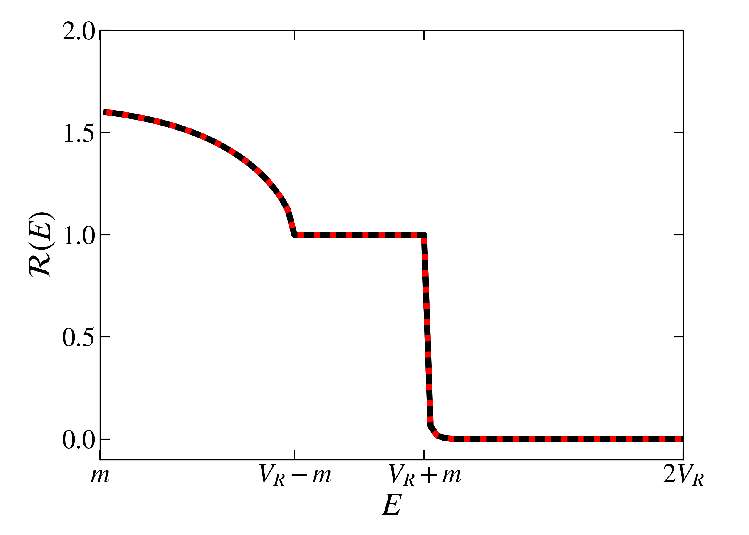
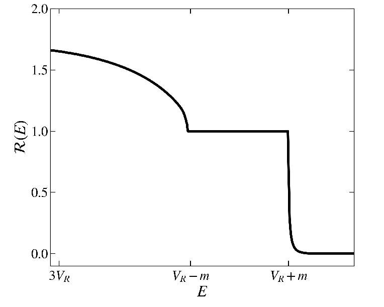

Astrophysics
Questions on a
cosmic scale.
Relativistic scattering, superradiance, and cosmology-inspired potentials.
Relativistic scattering · Cosmology-inspired potentials
Superradiance in the
α-attractor potential.
How can a reflected wave carry more flux than the incident wave? Our study explores this question through the one-dimensional Klein–Gordon equation and a numerical log-derivative approach.
A. Salazar, Q. Potosí, D. Laroze, L. M. Pérez, B. de Zayas, and C. Rojas.
Research question
Does an α-attractor potential support superradiant scattering of a relativistic spin-0 field, and can the log-derivative method reliably recover its reflection and transmission coefficients?
The potential is inspired by models used in quintessential inflation. Here it is studied as an external potential in a stationary, one-dimensional scattering problem, rather than as a simulation of cosmological evolution.
Summary
This study investigates superradiance in the one-dimensional, time-independent Klein–Gordon equation with an α-attractor potential. Reflection and transmission coefficients are computed using the log-derivative method, which evolves a Riccati equation rather than the wavefunction directly. The numerical approach is benchmarked against the analytical solution for a hyperbolic tangent potential before being applied to the α-attractor model. The results identify both total-reflection and superradiant regimes, with reflected flux exceeding incident flux in the latter.
Methods
We solve the stationary Klein–Gordon equation in natural units, ℏ = c = 1. Instead of propagating the wavefunction directly, we evolve its logarithmic derivative, y = ϕ′/ϕ, using the associated Riccati equation.
- Backward integration from an outgoing-wave boundary condition using fourth-order Runge–Kutta.
- Extraction of reflection and transmission coefficients from asymptotic scattering states and flux ratios.
- Validation against the analytical solution for a hyperbolic tangent potential.
- Application to V(x) = a exp[−b tanh(cx)], with asymptotic limits VL = aeb and VR = ae−b.
Results & figures
The numerical results reproduce the analytical benchmark and show a superradiant region in the α-attractor model, where R > 1. A separate interval of total reflection, R = 1, occurs when the transmitted solution becomes evanescent.




In the superradiant regime, the transmitted flux has a negative sign and the reflected flux is amplified. The flux coefficients obey R + T = 1; T is a signed flux ratio here, not a probability constrained between zero and one.
Paper & resources
Study of the superradiance phenomenon in the α-attractor potential using the log derivative method
A. Salazar, Q. Potosí, D. Laroze, L. M. Pérez, B. de Zayas, and C. Rojas.
International Journal of Modern Physics A (2026), 2650175.
The research summary and figures on this page are based on arXiv:2605.10497v1. The journal citation is provided in my CV.